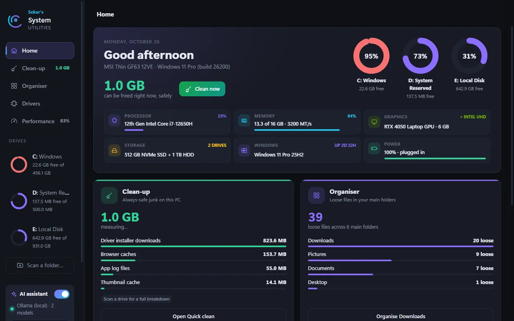
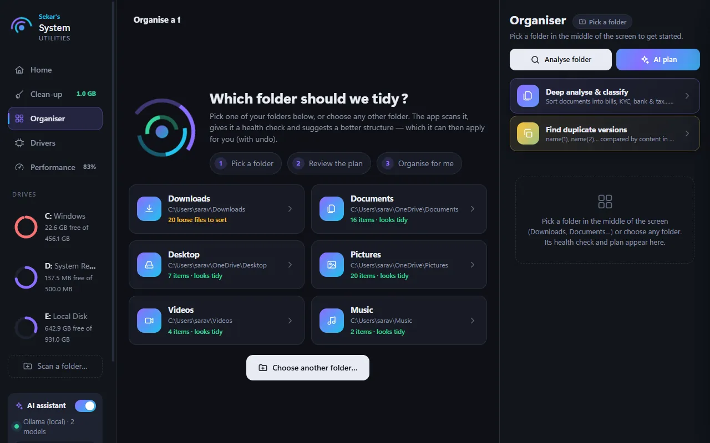
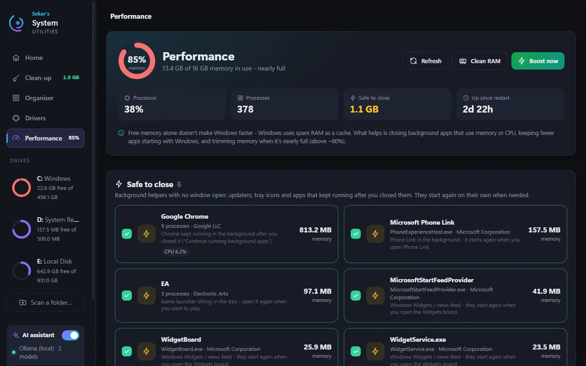
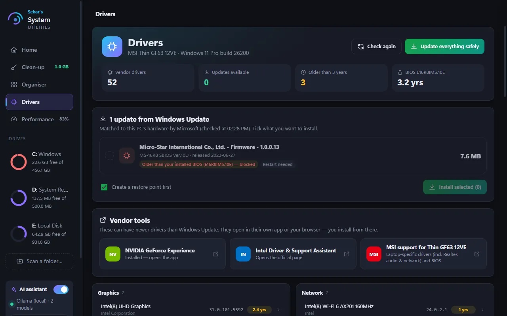
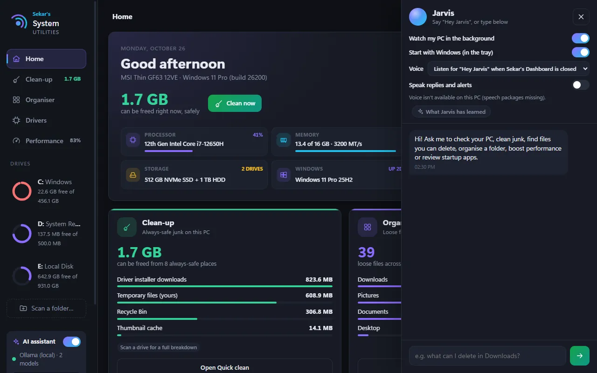
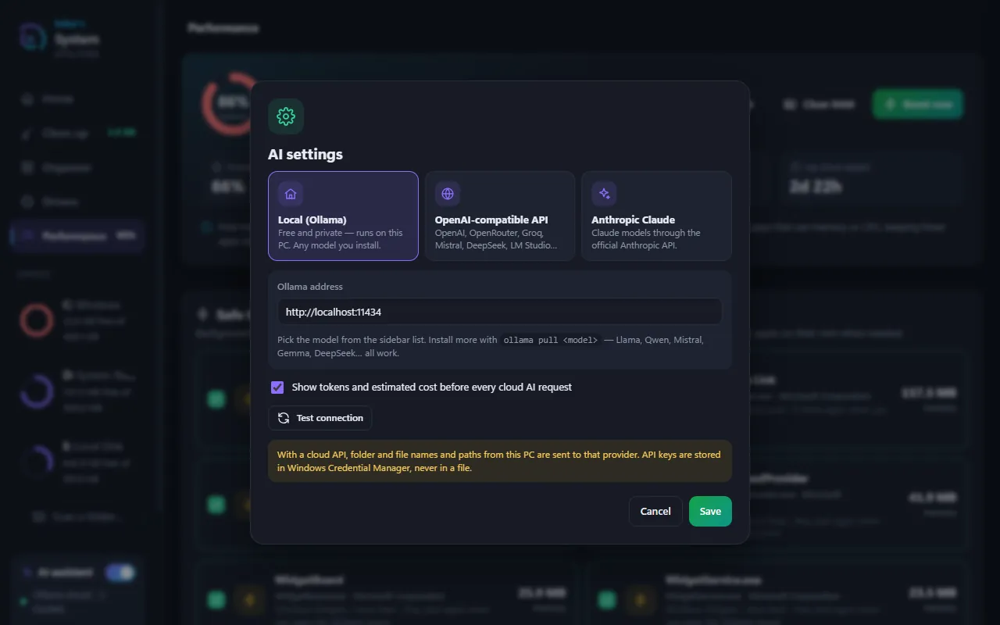
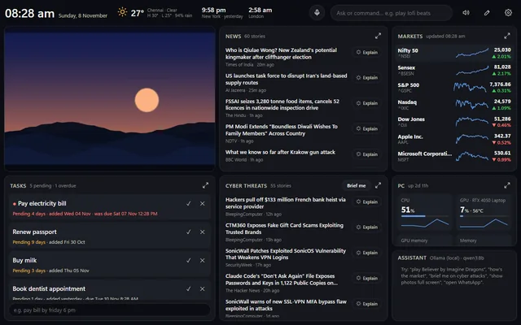

Project story
Why I built System Utilities
It started with a full disk. It ended with a small open-source PC care app and an AI assistant that can answer questions about the machine.
- Latest version
- 1.0.1, released 3 November 2026
- Platform
- Windows 10 and 11
- Installer
- About 25 MB. No Python needed
- Licence
- MIT, open source
- Price
- Free, no account
- AI
- Optional: local Ollama, Gemini, an OpenAI-compatible API or Claude
It started with a notification: my storage was at 90 to 95 percent. I had already tried several AI models and tools, so I wasn't short on options. But the warning meant I had to find out what was eating the disk myself.
I went through the drive folder by folder, checked each size, and decided what to keep and what to delete. It was slow, and I realised I was doing the same steps every time. I have Claude, so I asked it to build a simple app that does what I do by hand. It lists each folder with its size and suggests what can be deleted.

Growing a small tool
That first version grew. I added temporary folders and other places where junk piles up, the kind of files you never think about. Then it could clear those files directly and free space without my hunting for them. Quick clean does that now, and it still asks before it deletes anything.
Downloads everywhere
My next problem was downloads. Files were scattered across Downloads, Desktop, and Documents, and folders had built up in no particular order. I built an organiser that uses the local AI model on my PC. It looks at the loose files, proposes a sensible folder structure, and sorts things into place. You see the plan first, and every move can be undone.

Processes, memory, and drivers
After that I wanted a view of the running processes and memory, with a way to close background apps I didn't need and free RAM. I added that too. I also added a check for outdated drivers, since a driver that is years old is easy to forget about.


Asking instead of clicking
Then I noticed the gap. Each of those tools answers one question, and none of them let you just ask. So I added an AI assistant, Jarvis. The name and the idea came from Marvel's JARVIS in the Iron Man films, and from a few AI and tech channels on Instagram that showed what a personal assistant could do. You can type to it, and if you run the app from source you can speak to it too. It can check your files and your processes, and it will flag anything that looks suspicious. It always asks before changing anything, and it only uses the AI provider you chose.

Under the hood
AI is optional. You can run a free local model through Ollama, connect any OpenAI-compatible API, or use Anthropic Claude. With a cloud provider, the Organiser shows token and cost estimates before it makes a plan. API keys are kept in Windows Credential Manager, not in a file.

Version 1.0.1: the first installer
The app now comes as a normal Windows installer of about 25 MB. You do not need Python, and it does not touch any Python you already have. It installs for your own account, so it needs no administrator rights.
Two things to know before you install. First, the installer is the typing-only edition: Jarvis works by typing, and the “Hey Jarvis” wake word and speech-to-text are only available when you run the app from source. Second, the installer is signed with a certificate I made myself, which Microsoft does not know yet, so Windows SmartScreen may say “Windows protected your PC” the first time. Choose More info, then Run anyway.
- Open the latest release and download the installer, the
.cercertificate andTrust-Certificate.ps1into one folder. - Optional: check the file. In PowerShell run
Get-FileHashon the installer and compare the result with the SHA-256 on the release page. - Optional: right-click
Trust-Certificate.ps1and run it with PowerShell. Windows will then show “Sekar's Voyage” as the publisher. - Run the installer and choose Install for me only.
Python programs packed into a single file are sometimes flagged by antivirus tools by mistake. If that happens, compare the checksum with the release page. If it matches, it is a false positive; if it does not, delete the file. The release builds use a bootloader I compiled from source, which antivirus tools flag less often.
Share it, change it
What began as a fix for one full disk is now a complete PC care package. I'm sharing it as an open-source project, so anyone can look at how it works, try it, and change it to suit them. Deletions go to the Recycle Bin where possible, Windows and program folders are protected, and nothing is closed, deleted, moved, or installed without your confirmation.
There is no account, no telemetry, and no ads. The app does not phone home.
